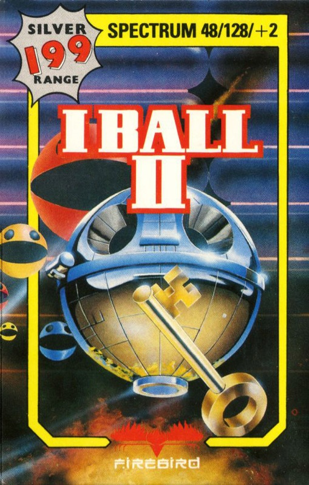
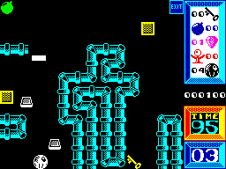

I, Ball II


{kind=link}

| Publisher: | Firebird Silver |
| Price: | £1.99 |
| Year: | 1987 |
| Source: | CRASH, Issue 45 |

After his bouncing conquest of the evil Terry Ball in Firebird’s CRASH Smash I, Ball (Issue 39), the bulbous I, Ball is sent down deep mines to investigate the history of the Balls (a race of multicoloured, well, balls).
I, Ball jumps and bounces through this subterranean maze of antiquity. The flame-thrower he carries must stand him in good stead against the hordes of rotating blocks, spinning squares and descending cubes that seek to do our rotund hero down; I, Ball can earn clusters of points by destroying these geometrical muggers before they take his five lives.

There are 50 screens through which I, Ball must work his way — by finding a key in each screen and getting to the exit with it, within a time limit. And as he progresses I, Ball should gather valuable historic artefacts by bundling his globular form into them.
But each mine has its own peculiarities and characteristics, which I, Ball must discover and use to his advantage...
I, Ball can pick up extra lives, weapons and so on as he moves through this strange world; points are awarded for such kleptomania. Power Stones have the strangest of properties — they can boost power, slow opponents in a power warp, or increase a leap.
When this roly-poly explorer has advanced through five mines, he is treated to the sight of a priceless object, made in the youth of his race. And when I, Ball has gathered ten such objects his task is complete and he can once more be feted as a hero.
CRITICISM
“I, Ball 2 is the most frustrating game I’ve ever played — the screen layout gives you minimum manoeuvrability! But the special FX are fantastic, with loads of speech, crumbling rocks, and masses of nasties. Colour is used extremely well, too, and the graphics are superbly well-defined. Considering that the idea of I, Ball 2 is so simple it’s amazingly addictive and compelling.”
NICK ... 90%
“I, Ball 2 is a very playable leap-around-and-blast-everything-in-sight collect-’em-up. Graphically it’s great, with a cheerful-looking little bouncing ball sproinging around nicely-drawn backdrops. There are plenty of nasties trying to stop him — and for many games they will succeed admirably...”
MARK ... 87%
“I, Ball 2 is a really excellent game. The graphics are smooth and fast, though they’re not very exciting, and the gameplay is challenging and fun. The sound is superb: the title tune isn’t exactly Mozart, but the in-game effects and the speech are really good, ranking next to the original I, Ball. This is a great game — and it’s budget too!”
MIKE ... 93%
COMMENTS
| Joystick: | Cursor, Kempston, Sinclair |
| Graphics: | Well-drawn, well-animated cute characters |
| Sound: | Magnificent speech but weak tune |
| General rating: | A very successful follow-up to I, Ball |
| Presentation: | 86% |
| Graphics: | 83% |
| Playability: | 89% |
| Addictive qualities: | 89% |
| Overall: | 90% |